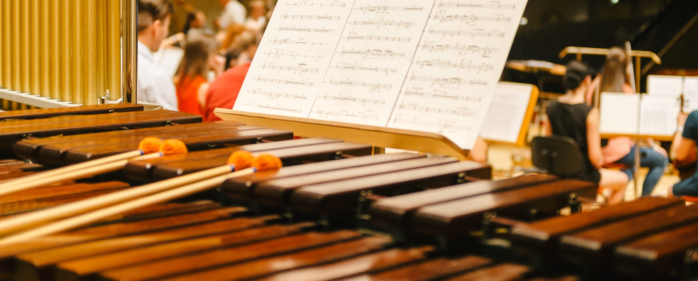

Marimba

POPULARITY
The picture is complicated by the fact that marimba have been present for centuries in both east Africa and southeast Asia. The famous iphone tune is even played only in marimba.
DIFICULTY LEVEL
You can learn a well-known song in about only 2 days but to master it requires time, Still marimba comes under easiest musical instruments. 1-2years is typical, but after 2 year's of practice anyone can play it very well.
TIME TO LEARN
The best age to start marimba lessons is generally after 15 ,as it required good holding hand capacity and one can master it in around 3 year on practicing 2 hours daily.
PRICE
For a good marimba it costs around Rs.20000 and for beginners it starts from Rs.5000.
The picture is complicated by the fact that marimba have been present for centuries in both east Africa and southeast Asia. The famous iphone tune is even played only in marimba.
DIFICULTY LEVEL
You can learn a well-known song in about only 2 days but to master it requires time, Still marimba comes under easiest musical instruments. 1-2years is typical, but after 2 year's of practice anyone can play it very well.
TIME TO LEARN
The best age to start marimba lessons is generally after 15 ,as it required good holding hand capacity and one can master it in around 3 year on practicing 2 hours daily.
PRICE
For a good marimba it costs around Rs.20000 and for beginners it starts from Rs.5000.